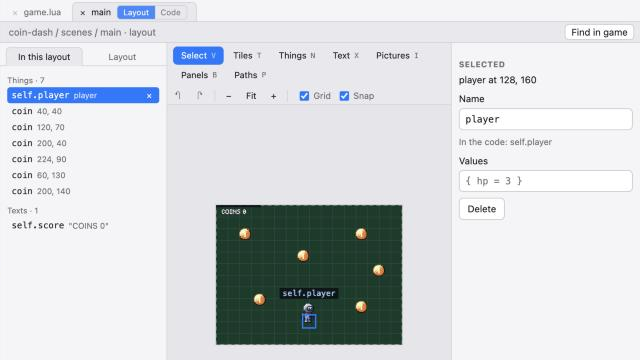
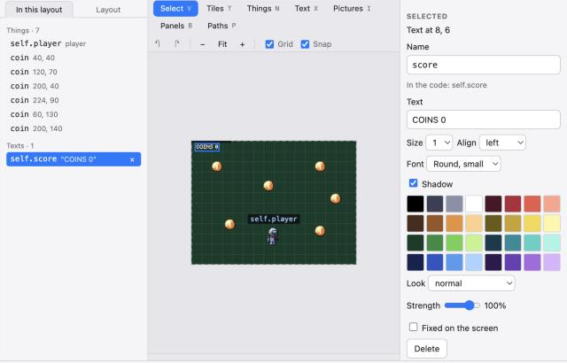

This page walks through the studio itself: where to click and what each part is for. You make Coin Dash: walk around a field and pick up every coin, then the title screen comes back. It takes about twenty minutes. The finished files are on this page too (and Make this game at the bottom gives you all of them), but doing it by hand is how the studio starts to make sense.
On the start screen press New game, type coin-dash, keep Glow43 as the console and press Create. The studio asks where the
game's folder should go; Documents/GameStudio is a good home. The game is that folder: every file you see on the left is a file in it, so you can
back it up, put it in git or open it in another editor. Show folder (under the game's name) opens it in Finder.
You start with:
| On the left | What it is |
|---|---|
game.lua | The game's title, its console and the scene it starts with. |
| Colours | The game's colour banks (palette.json): sets of 15 colours that sprites and tiles draw with, like a GBA. |
Entities: player | The things in your game. Each kind is one Lua file: its starting values and what it does. |
Scenes: main | A screen of your game. Every scene has two halves, Layout and Code (step 4). |
The folder also gets a hidden .gamestudio folder the first time you open a tab. That is the studio's own notes (which tabs were open, where you were), like a code editor's settings
folder: it is not part of the game, is never sent to the handheld, and is safe to delete.
Press Run (Cmd/Ctrl+Enter). The game plays in the Play panel beside the code: click it, then move the red square with the arrow keys. Leave it running for the rest of this page. Every time you save a file the running game picks up the change at once.
hero, press Enter. The sprite editor opens with a blank 32x32 picture
(the right size for a hero on this screen, see Sprite and tile sizes).Now open player under Entities, put the sprite in its table and delete its draw method (an entity with a sprite draws itself). Save, and the square in the running game becomes your hero.
local Player = gs.entity{
sprite = "hero",
tags = { "player" },
speed = 90, -- pixels a second
}Want it to walk? Press + next to Animations at the bottom left and call the frame you drew idle, then + again for walk:
draw its frames (Copy copies a frame, change a little), and call self:play("walk") while the player moves:
see Sprites, animation and sound.
Click main under Scenes. Its tab above the editor has two buttons, Layout and Code, the two halves of every scene:
scenes/main.layout.lua.enter runs once when the scene starts, update every step. It is scenes/main.lua.The scene starts by building its layout, then runs enter. A rule of thumb: if you can point at it, put it in the layout; if it changes or decides, it is code.
The new game already put the player in the layout, in the middle of the screen. Click Layout to see it:
player, and self.player shows above it: that is what the code calls it.
main with the player and the coins placed. The player is selected: its name on the right is what the code calls it.The list on the left of the layout, In this layout, shows everything with a name as self.something. Typing self. in the code lists the same names,
and a misspelt one gets a warning. That list is the map between the two halves: the layout says what exists, the names are how the code reaches it.
Press + beside Entities and make coin. A coin needs a tag (so the player knows what it touched), a hitbox, and something to look like.
Draw a 16x16 coin sprite (the items bank has gold) and use sprite = "coin", or draw a circle as here:
local Coin = gs.entity{
tags = { "coin" },
hitbox = { r = 6 }, -- a circle with a radius of 6
}
function Coin:draw()
gs.draw.circle(self.x, self.y, 6, "#f5d94a")
end
return CoinBack in the scene's Layout, pick Entities, choose coin and click six or seven times around the field. Coins don't need names: forty coins
would make forty names, and the code only needs to count them.
Now the player picks them up. A method called on_collide_ plus a tag runs when the two touch:
-- The player moves with the D-pad and picks up coins.
local Player = gs.entity{
tags = { "player" },
hitbox = { -8, -8, 16, 16 },
speed = 90, -- pixels a second
}
function Player:update(dt)
local dx, dy = gs.input.dir()
self.x = gs.clamp(self.x + dx * self.speed * dt, 8, 248)
self.y = gs.clamp(self.y + dy * self.speed * dt, 8, 184)
end
function Player:draw()
gs.draw.rect(self.x - 8, self.y - 8, 16, 16, "#ea5a4b")
end
function Player:on_collide_coin(coin)
coin:destroy()
end
return PlayerIn the Layout pick Text (X), click near the top left and type COINS 0. Name it score. On the right you can choose its font
(round, square or bold; small or tall), colour and a shadow. Then the code changes its words as you play: the scene counts the coins when it starts, and says how many are gone.

score text selected: its words, size, font, shadow and colour are on the right.-- The scene's layout, built when it starts. Named things are fields of its code: self.<name>.
return {
width = 256, height = 192, background = "#123b2a",
entities = {
{ "player", 128, 160, {}, name = "player" },
{ "coin", 40, 40, {} },
{ "coin", 120, 70, {} },
{ "coin", 200, 40, {} },
{ "coin", 224, 90, {} },
{ "coin", 60, 130, {} },
{ "coin", 200, 140, {} },
},
texts = {
{ "COINS 0", 8, 6, name = "score", color = "#ffffff", font = "round_small", shadow = true },
},
}That is what the layout editor writes; you never have to type it. Edit as text shows it if you are curious.
local Main = gs.scene{}
function Main:enter()
self.total = gs.count("coin") -- the layout is already built, so the coins are there
end
function Main:update(dt)
local got = self.total - gs.count("coin")
self.score.text = "COINS " .. got
if got == self.total then
gs.goto_scene("scenes.title", { fade = 0.5 }) -- all of them: back to the title
end
end
return Mainpickup.function Player:on_collide_coin(coin)
gs.sfx("pickup")
coin:destroy()
endMusic is the same idea with songs: gs.music("name"). Music and sound effects says what fits which mood.
Press + beside Scenes and make title. A new scene gets both halves. In its Layout put two texts: COIN DASH big, in the bold
tall font, named title, and PRESS A named prompt. The code blinks the prompt and starts the game:
-- The scene's layout, built when it starts. Named things are fields of its code: self.<name>.
return {
width = 256, height = 192, background = "#14234f",
entities = {
},
texts = {
{ "COIN DASH", 128, 60, name = "title", color = "#ffd08a", size = 2, align = "center", font = "bold_tall", shadow = true },
{ "PRESS A", 128, 136, name = "prompt", color = "#ffffff", align = "center", font = "round_tall", shadow = true },
},
}local Title = gs.scene{}
function Title:update(dt)
self.prompt.visible = gs.time() % 1 < 0.6
if gs.input.pressed("a") then
gs.goto_scene("scenes.main", { fade = 0.3 })
end
end
return TitleLast, open game.lua and make the title the first scene:
return gs.game{
title = "Coin Dash",
console = "glow43",
start = "scenes.title",
}The Handheld tab under the editor shows how the game compares with what the handheld can do. Game info… sets the title, description and box art its game list shows. With the device set up (Settings), Send to device packs the game into one cartridge file and copies it over.